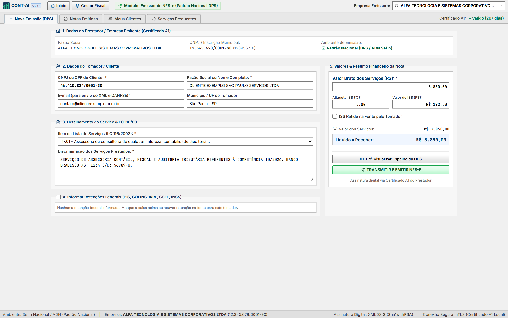
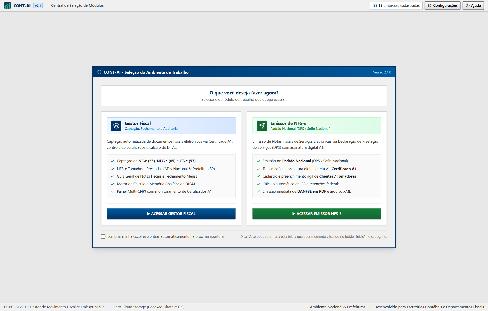
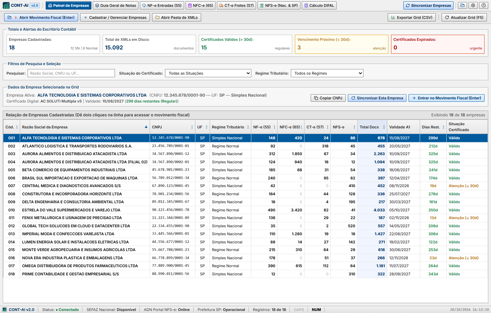

Gestão Fiscal Integrada, Emissor Nacional de NFS-e & Auditoria de DIFAL
Sistema Desktop ERP gratuito desenvolvido para escritórios de contabilidade e departamentos fiscais. Conexão direta via Certificado Digital A1 (mTLS) com a SEFAZ Nacional, Ambiente Nacional ADN e Prefeitura de São Paulo.
Compatível com Windows 10 e 11 (x64) • Código aberto para uso gratuito (não-comercial) • Certificados salvos localmente.
Emissão Direta via Certificado Digital A1
Desenvolvido para eliminar a instabilidade dos portais governamentais web. Conecte o Certificado A1 da empresa e emita a DPS/NFS-e diretamente pela API Nacional.
-
Painel Suspenso de Seleção: Pesquise por código ou descrição em
cTribNac(LC 116),cNBS,cIndOpecClassTrib. - Controle de Sequencial: Acompanha o histórico de numeração de notas autorizadas para evitar duplicidades.
- Espelho Pré-Emissão & DANFSe: Visualize a prévia dos impostos e retenções antes de assinar digitalmente e imprima o DANFSe oficial em PDF.

Tela Operacional de Emissão DPS
Espelho de Conferência e DANFSeMódulos do CONT-AI Gestor Fiscal
Ferramentas de alta densidade desenvolvidas com foco na produtividade da rotina fiscal contábil.
Gestão visual de toda a carteira de clientes, monitoramento de validade dos Certificados Digitais A1 (avisos de 30 dias e expirados) e botão de sincronização em lote de todas as empresas em 1 clique.
Sincronização nativa direta via SEFAZ Nacional (NFeDistribuicaoDFe), manifestação automática de Ciência da Operação e download dos XMLs completos.
Integração com o Ambiente de Dados Nacional (ADN) e Prefeitura de São Paulo, capturando automaticamente serviços tomados e prestados com espelho DANFSE em PDF.
Consulta de Conhecimentos de Transporte Eletrônicos com geração instantânea de DACTE e separação de cupons fiscais NFC-e (Modelo 65) por competência.
Filtro automático de notas interestaduais, consulta se o fornecedor é Simples Nacional ou Regime Normal e cálculo com memória item a item por NCM/CFOP.
Consolidação de todos os 4 modelos fiscais em uma única grade de auditoria, conferência de retenções federais (IRRF, PIS, COFINS, CSLL, INSS) e exportação em CSV/Excel.
Demonstração Visual dos Módulos
Clique nas abas abaixo para conferir a interface real do software:

Este projeto economiza horas da sua rotina fiscal?
O CONT-AI é distribuído de forma aberta para que escritórios e empresas não fiquem reféns de mensalidades caras de captura de XMLs. Qualquer contribuição voluntária via PIX ajuda diretamente a manter o suporte e o desenvolvimento contínuo das novas regras fiscais brasileiras.
66.604.571/0001-43
Desenvolvido por Vagner Godoy de Melo
Analista Fiscal | Análise de Dados | Automações Fiscais
Formado em Ciências Contábeis com formação técnica em Informática (ETEC). Unindo a vivência prática da rotina de escritórios de contabilidade (apuração de tributos, fechamento fiscal de dezenas de empresas e rotinas integradas) ao desenvolvimento de softwares e automações para resolver os gargalos reais do dia a dia contábil.